library(tidyverse)
library(searchConsoleR)
library(lubridate)
library(feasts)
library(slider)
library(urltools)
options(lubridate.week.start = 1)Článek je hodně dlouhý, protože sestavit a vizualizovat časové řady (time series) z dat Search Console jde mnoha způsoby a není úplně triviální si vybrat ty, které dávají pro daný účel smysl. Ukážu zde všechny, které bežně používám, i ty, které používám jen výjimečně nebo skoro vůbec.
Kód v jazyce R jsem se snažil napsat tak, aby byl funkční, čistý, srozumitelný a hlavně snadno a univerzálně znovupoužitelný. Časem asi na analýzu dat Search Console udělám samostatný balíček, ale do té doby musí stačit tohle.
Na druhou stranu má článek i čistě metodickou, na programovacím jazyce nezávislou rovinu. Některé uvedené časové řady a jejich vizualizace jdou vytvořit i jinak, např. v Data Studiu (na příklad odkazuju dál) nebo v Google Sheets. I bez znalosti R jde tedy článek využít jako vzorník výstupů, které jdou z dat Search Console různými prostředky udělat, a které dávají určitý smysl.
Všechny ukázky čerpají z dat webu Glamour Cabaret Alžběty Faltysové. Jako hobby projekt bez větších investic sice neohromí gigantickými čísly, ale zároveň hezky ukazuje některé vzorce typické pro přirozeně a dobře budovaný obsah se zajímavým potenciálem dalšího růstu. Alžbětě moc děkuju, že mi data pro článek poskytla.
Pro jistotu upozorňuju, že tenhle článek se primárně zabývá konstrukcí a vizualizací časových řad z dat Search Console, nikoli jejich detailní analýzou. Té se budu věnnovat někdy jindy.
Příprava
Potřebné balíčky
Jako vždy tidyverse, searchConsoleR pro práci se Search Consolí, lubridate pro práci s daty a časem. Balíček feasts je zde jen pro dekompozici časové řady na trend, sezónnost a šum, a balíček slider umožňuje výpočet klouzavých průměrů. Balíček urltools slouží k rozložení URL na složky a používám ho k segentaci dat podle stránek.
Dlužno dodat, že balíčky specializované na časové řady zde používám jen v nejnutnější míře a zatím mi to tak vyhovuje. Na druhou stranu přiznávám, že některé věci by šly řešit elegantněji plným nasazením specializovaných balíčků typu timetk, tsbox, tsibble apod.
Poslední řádek nastavuje začátek týdne na pondělí pro balíček lubridate.
Základní parametry
Kdykoli pracuju s daty Search Console, nejprve definuju parametry, které určují, jaká vstupní data chci získat. Konkrétně:
sc_site– z kterého webu,sc_country– ze které země má hledání pocházet (používám vždy, pokud web primárně cílí na jednu zemi),date_from,date_to– za jaké období data chci.
sc_site <- "https://www.glamourcabaret.cz/"
sc_country <- "cze"
date_from <- as.Date("2020-11-01")
date_to <- as.Date("2022-04-10")Nastavení časových parametrů balíčkem lubridate
Někdy jsem líný hledat v kalendáři vhodná data, nebo chci, aby se mi parametry date_from a date_to automaticky aktualizovaly. Na to se hodí balíček lubridate.
Pro Search Consoli typicky chci datum před třemi dny, protože poslední tři dny ještě data v Search Consoli nejsou finální.
today() - 3[1] "2023-02-15"Když chci třeba poslední 4 celé kalendářní týdny, udělám to takhle:
period_end <- floor_date(today() - 2, unit = "week") - 1
period_start <- period_end - weeks(4) + 1
cat("Od", format(period_start, "%x (%A)"), "do", format(period_end, "%x (%A)"))Od 16.01.2023 (pondělí) do 12.02.2023 (neděle)Obdobně můžu určit třeba posledních 6 celých kalendářních měsíců:
period_end <- floor_date(today() - 2, unit = "month") - 1
period_start <- add_with_rollback(period_end, months(-6), roll_to_first = TRUE)
cat("Od", format(period_start, "%x"), "do", format(period_end, "%x"))Od 31.07.2022 do 31.01.2023Nebo poslední celý rok (ten ale nebude po dubnu běžného roku fungovat, protože Search Console archivuje jen posledních 16 měsíců):
period_end <- floor_date(today() - 2, unit = "year") - 1
period_start <- floor_date(period_end, "year")
cat("Od", format(period_start, "%x"), "do", format(period_end, "%x"))Od 01.01.2022 do 31.12.2022Načtení vstupních dat
Pak si podle potřeby definuju funkci, která při prvním zavolání s konkrétními parametry načte data funkcí search_analytics z balíčku searchConsoleR a uloží je do souboru. Při druhém a dalším zavolání se stejnými parametry již načítá data z uloženého souboru. To má dvě výhody:
- Opakované načtení dat je mnohem rychlejší.
- Skript pokaždé pracuje se stejnými daty, i když už ze Search Console zmizela (jsou tam data jen za posledních 16 měsíců).
A dvě nevýhody:
- Uložená data zabírají místo na disku.
- Pokud potřebuju čerstvá data nebo s jinými parametry, musím soubory z disku odstranit.
Pro účely tohoto zápisku si funkci definuju velmi jednoduše. Jako jediný parametr má dimenze, vše ostatní se bere přímo z globálních objektů definovaných výše. Data ukládá do podsložky raw-data, která již v aktuální složce musí existovat. Pro jiné účely může být funkce složitější.
read_sc <- function(dimensions) {
rds_path <- file.path(
".", "data-raw", paste0("sc-", paste(dimensions, collapse = "-"), ".rds")
)
row_limit <- as.integer(date_to - date_from) * 500 * (length(dimensions))
if (!file.exists(rds_path)) {
search_analytics(
siteURL = sc_site,
startDate = date_from,
endDate = date_to,
dimensions = dimensions,
dimensionFilterExp = paste0("country==", sc_country),
rowLimit = row_limit
) |>
write_rds(rds_path, compress = "gz")
}
read_rds(rds_path)
}Nakonec si opravdu stáhnu resp. ze souborů načtu všechna data, která budu ze Search Console potřebovat. V praxi se s tím musí opatrně, protože tahání více dimenzí za delší období z API může trvat docela dlouho. Když nevím, jak budou data konkrétního webu veliká, zkusím nejprve stáhnout jeden typický den nebo týden a podle toho se rozhodnu.
Pokud budete kód sami pouštět, funkci src_auth můžete nechat bez parametrů a ona se vás na e-mail zeptá. Já to mám takhle proto, aby to běželo automaticky.
scr_auth(email = Sys.getenv("MY_GOOGLE_ACCOUNT"))✔ Setting client.id from C:/Users/HP Z1/AppData/Local/R/win-library/4.2/searchConsoleR/clients/native.jsonsc_by_date <- read_sc("date")
sc_by_date_page <- read_sc(c("date", "page"))
sc_by_date_query <- read_sc(c("date", "query"))
sc_by_date_page_query <- read_sc(c("date", "page", "query"))Výsledkem je několik dataframů, jejichž strukturu a obsah si mohu rychle zkontrolovat.
glimpse(sc_by_date)Rows: 498
Columns: 5
$ date <date> 2020-11-28, 2020-11-29, 2020-11-30, 2020-12-01, 2020-12-0…
$ clicks <int> 0, 0, 0, 0, 0, 0, 0, 0, 0, 0, 0, 0, 0, 0, 0, 0, 0, 0, 0, 0…
$ impressions <int> 0, 0, 0, 4, 5, 1, 0, 0, 1, 0, 2, 10, 4, 6, 3, 6, 6, 2, 6, …
$ ctr <dbl> 0.00, 0.00, 0.00, 0.00, 0.00, 0.00, 0.00, 0.00, 0.00, 0.00…
$ position <dbl> 0.000000, 0.000000, 0.000000, 16.500000, 8.400000, 11.0000…glimpse(sc_by_date_page)Rows: 18,626
Columns: 6
$ date <date> 2021-12-19, 2021-07-02, 2021-04-19, 2021-07-05, 2021-06-3…
$ page <chr> "https://www.glamourcabaret.cz/znacky/hermes", "https://ww…
$ clicks <int> 30, 13, 12, 12, 11, 11, 10, 8, 8, 8, 8, 8, 7, 7, 7, 7, 7, …
$ impressions <int> 657, 272, 406, 100, 374, 768, 295, 91, 226, 105, 141, 105,…
$ ctr <dbl> 0.04566210, 0.04779412, 0.02955665, 0.12000000, 0.02941176…
$ position <dbl> 3.713851, 3.669118, 5.211823, 3.470000, 4.687166, 3.281250…A tak dále. Výsledný dataframe vždy obsahuje dimenzi date, případné další dimenze a čtyři základní metriky, které Search Console eviduje.
Nekonzistence dat Search Console
Teoreticky by stačilo stáhnout jenom poslední dataset sc_by_date_page_query, protože z něho by mělo jít všechno ostatní agregovat, jenže Search Console vrací různě upravené výsledky podle toho, zda si vyžádáte dimenze page nebo query, takže datasety bez těchto dimenzí mají přesnější čísla než data sety s nimi. Podrobněji to dokumentuju v tomhle testu.
Z tohoto důvodu beru základní metriky (imprese, kliky, CTR a pozice) pokud možno jen z datasetu, který nebosahuje dimenze page nebo query. Datasety s těmito dimenzemi používám jen v případě, že potřebuju znát konkrétní stránky nebo jejich počty, resp. konkrétní dotazy nebo jejich počty.
Vizualizace časových řad
Základní metriky
Základní vizualizace, kterou skoro stejně ukazuje i webové rozhraní Search Console, vypadá takto:
scale_factor <- max(sc_by_date$clicks) / max(sc_by_date$impressions)
sc_by_date |>
ggplot(aes(x = date)) +
geom_line(aes(y = clicks), color = "#4285f4") +
geom_line(aes(y = impressions * scale_factor), color = "#5e35b1") +
scale_y_continuous(
name = "clicks",
sec.axis = sec_axis(~ . / scale_factor, name = "impressions")
) +
theme(
axis.title.y.left = element_text(color = "#4285f4"),
axis.text.y.left = element_text(color = "#4285f4"),
axis.title.y.right = element_text(color = "#5e35b1"),
axis.text.y.right = element_text(color = "#5e35b1")
) +
theme_minimal()
Tenhle graf má duální osu Y (čili dvě různé osy Y), což patří spíš do rejstříku „manažerských“ grafů, které se ve vážnější analytice z dobrých důvodů moc nepoužívájí. V R se místo toho většinou používají fasety (grafy vedle sebe a/nebo pod sebou), které nezkreslují měřítko, nepletou čtenáře co je co a navíc se do nich vejdou víc než dvě metriky, když je to potřeba.
Protože budu v dalším kódu potřebovat podobné fasetové grafy často, připravím si na ně dvě funkce, abych nepsal opakovaně stejný kód.
První funkce sc_reshape provede tři věci:
- Přesune imprese před kliky, protože tohle pořadí mi připadá logičtější.
- Převede širokou tabulku na dlouhou, tj. hodnoty metrik v druhém až posledním sloupci sloučí do jediného sloupce
value(to je ve funkcipivot_longer default) a jejich názvy do sloupcemetric. - Převede názvy metrik na typ factor, aby se fasety v grafu správně seřadily.
K druhému bodu vysvětlení: Fasety v principu zobrazují jen jednu proměnnou ve více kategoriích, takže se tabulka musí předem převést na dlouhý formát, ve kterém se do jednoho sloupce dostanou názvy metrik jako kategorie a do druhého sloupce hodnoty všech metrik. K tomu slouží funkce pivot_longer.
sc_reshape <- function(df) {
if ("impressions" %in% names(df)) {
df <- df |>
relocate(impressions, .before = clicks)
}
df |>
pivot_longer(cols = 2:last_col(), names_to = "metric") |>
mutate(metric = as_factor(metric))
}Druhá funkce vykreslí samotný graf časových řad. Protože budu používat různé časové rozpětí a různé časové jednotky, je malinko složitější, aby se tomu přizpůsobila.
sc_plot <- function(
df, x_breaks = "3 months", x_labels = "%b %y", x_minor_breaks = "month",
strip_pos = "right"
) {
df |>
ggplot(aes(x = .data[[names(df)[[1]]]], y = value)) +
geom_line() +
scale_x_date(
date_breaks = x_breaks, date_labels = x_labels,
date_minor_breaks = x_minor_breaks, expand = expansion(0.01)
) +
facet_wrap(
~ metric, ncol = 1, scales = "free_y", strip.position = strip_pos
) +
theme_gray()
}Ve fasetách vypadají časové řady všech čtyř základních metrik takhle:
sc_by_date |>
sc_reshape() |>
sc_plot()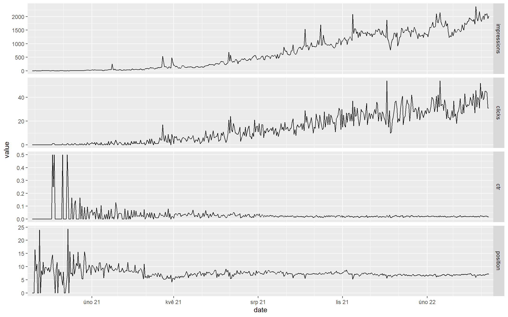
Výklad dat
Už tenhle graf jde nějak interpretovat:
- Na začátku období neměl web z Googlu skoro žádnou návštěvnost, ale po cca třech měsících se začal postupně zlepšovat a zřejmě se zlepšuje pořád.
- CTR v prvním měsíci skákalo až k 50 %, což s nepatrným počtem impresí naznačuje, že web se v té době zobrazoval jen na extrémně nekonkurenční dotazy, které neměly ve výsledcích hledání jinou dobrou odpověď. To se postupně změnilo, CTR kleslo, a to naznačuje, že přibyly nějaké normálnější dotazy.
- Tuto hypotézu podporuje i křivka průměrných pozic. Na začátku šíleně skáče, což je typické pro velmi malý počet dotazů, později se uklidní, takže se počet dotazů asi zvýšil.
- Z toho všecho bych usoudil, že web začínal s malým objemem obsahu a postupně se zvětšuje. Je to ale jen hypotéza, kterou je třeba podpořit dalšími daty.
Počet stránek a dotazů
Aby šla data lépe interpretovat, skoro vždy přidávám ještě dvě další časové řady – počet vstupních stránek a počet unikátních dotazů. K tomu jsem si stáhl ze Search Sonsole dva další datasety, vstupní stránky podle dnů (sc_by_date_page) dotazy podle dnů (sc_by_date_query). Nyní z nich funkcemi group_by a summarise spočítám počty unikátních stránek resp. dotazů za den a funkcí left_join je připojím k původní tabulce metrik. Výsledek uložím do objektu sc_all_metrics_by_date.
sc_all_metrics_by_date <- sc_by_date |>
left_join(
sc_by_date_page |>
group_by(date) |>
summarise(pages = n()),
by = "date"
) |>
left_join(
sc_by_date_query |>
group_by(date) |>
summarise(queries = n()),
by = "date"
) |>
mutate(
pages = replace_na(pages, 0),
queries = replace_na(queries, 0)
)Výslední tabulka vypadá takhle:
glimpse(sc_all_metrics_by_date)Rows: 498
Columns: 7
$ date <date> 2020-11-28, 2020-11-29, 2020-11-30, 2020-12-01, 2020-12-0…
$ clicks <int> 0, 0, 0, 0, 0, 0, 0, 0, 0, 0, 0, 0, 0, 0, 0, 0, 0, 0, 0, 0…
$ impressions <int> 0, 0, 0, 4, 5, 1, 0, 0, 1, 0, 2, 10, 4, 6, 3, 6, 6, 2, 6, …
$ ctr <dbl> 0.00, 0.00, 0.00, 0.00, 0.00, 0.00, 0.00, 0.00, 0.00, 0.00…
$ position <dbl> 0.000000, 0.000000, 0.000000, 16.500000, 8.400000, 11.0000…
$ pages <int> 0, 0, 0, 1, 1, 1, 0, 0, 0, 0, 0, 2, 1, 1, 1, 1, 1, 0, 1, 1…
$ queries <int> 0, 0, 0, 1, 1, 1, 0, 0, 0, 0, 0, 2, 1, 2, 2, 1, 1, 0, 1, 1…Graf zobrazím stejně, jako ten se čtyřmi základními metrikami, jen funkcí scale_x_date trochu vyladím rozdělení osy X, aby bylo časové členění přehlednější.
sc_all_metrics_by_date |>
sc_reshape() |>
sc_plot()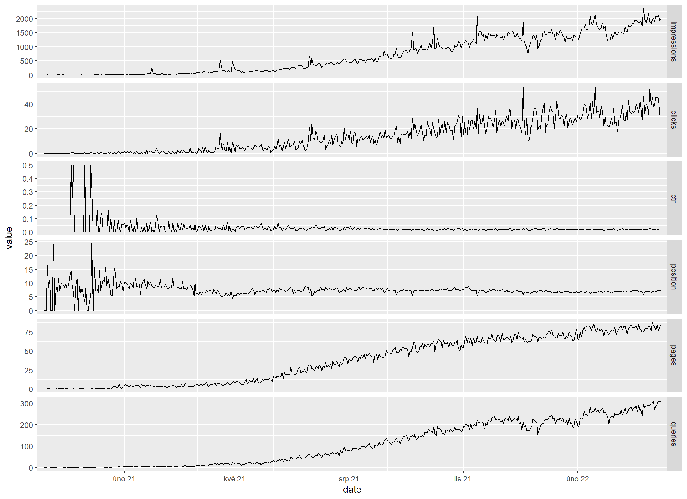
Mimochodem, obdobný graf jde odělat i v Data Studiu. Tady je příklad reportu, který si můžete zkopírovat a upravit pro své potřeby.
Zoomování grafu
V druhé polovině grafu za celé období nejsou moc dobře vidět změny CTR a pozic, protože na začátku období mají tyto metriky příliš veliké rozpětí hodnot. Zazoomuju proto na období od začátku srpna 2021 prostým vyfiltrováním řádků, které do grafu vstupují.
sc_all_metrics_by_date |>
filter(date >= as.Date("2021-08-01")) |>
sc_reshape() |>
sc_plot("month")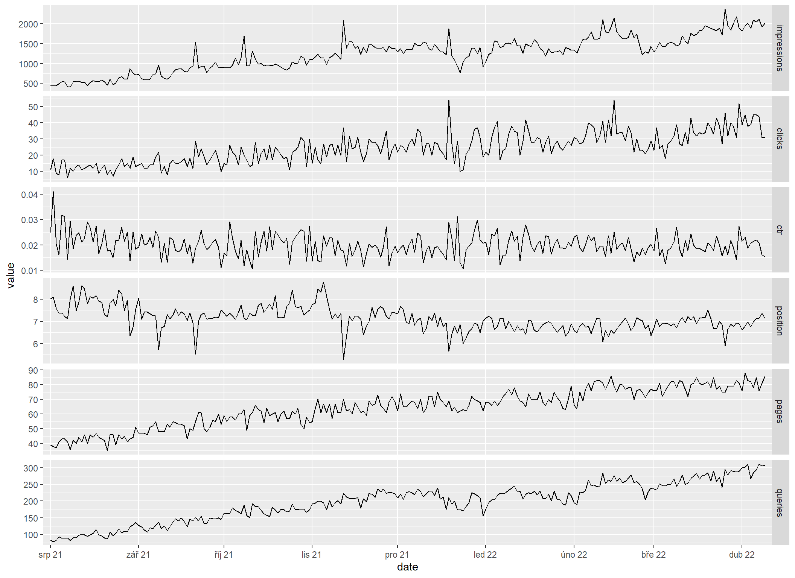
Granularita období
Až dosud jsem časové řady vykresloval po dnech. Pro data související s návštěvností webů je ale typická silná týdenní periodicita a v jejím důsledku grafy bývají hodně zubaté. Existuje několik způsobů, jak je vyhladit. Nejpřirozenější je snížit časovou granularitu a agregovat data za týden, měsíc, nebo ještě delší období. I to lze však udělat více způsoby, např mohu:
- Sečíst to, co jde sečíst (imprese a kliky) a zprůměrovat to, co sčítat nejde (CTR a pozice) a počty unikátních položek (stránek a dotazů) spočítat znovu. To vše za celé nové časové jednotky, tedy např. za týdny.
- Totéž, ale klouzavě. Ke každému dni tedy totéž sečtu, zprůměruju, nebo znovu vypočtu za posledních sedm dní. Bude to sice výpočetně náročnější, protože místo jednou za týden to budu počítat za každý den, ale i když nebude celé období začínat a končit přesně na hranici týdnů (resp. měsíců či jiné časové jednotky), nebude graf na okrajích zkreslený.
- Spočítat prosté průměry či mediány všech hodnot za týden či jinou časovou jednotku.
- Kromě průměru či mediánu spočítat a hezky vykreslit i pásmo, ve kterém se hodnoty pohybují.
Zkusím všechny varianty, ať je vidět, zda a případně jak se liší.
Agregace za kalendářní období
Agregace dat Search Console do delších časových jednotek, tedy typicky týdnů či měsíců případně kvartálů, není úplně triviální.
- Imprese a kliky se normálně sečtou, tam problém není.
- CTR a pozice se musí zprůměrovat váženým průměrem, přičemž vahou jsou imprese. Není to úplně nezbytné, ale je to bezpečnější, protože prostý aritmetický průměr se od váženého někdy liší jen nepatrně a jindy (při velkém rozdílu impresí) hodně.
- Počty unikátních stránek a dotazů se musí spočítat funkcí
n_distinctza každé dílčí období znovu. Rozdíl ve tvaru křivky sice nebývá moc veliký, ale zato je značný rozdíl ve velikosti hodnot – za den je unikátních dotazů či stránek podstatně méně než za týden nebo měsíc.
Pro usnadnění a zpřehlednění výpočtu si připravím několik funkcí.
První funkce agreguje tabulku základních metrik.
sc_aggregate <- function(df, per = "week") {
df |>
group_by("{per}" := floor_date(date, per)) |>
summarise(
across(ctr:position, ~ weighted.mean(.x, impressions)),
across(clicks:impressions, sum),
) |>
relocate(ctr:position, .after = impressions)
}
sc_aggregate(sc_by_date, "quarter")# A tibble: 7 × 5
quarter clicks impressions ctr position
<date> <int> <int> <dbl> <dbl>
1 2020-10-01 4 89 0.0449 9.19
2 2021-01-01 80 2608 0.0307 8.86
3 2021-04-01 464 16597 0.0280 6.79
4 2021-07-01 1224 54718 0.0224 7.35
5 2021-10-01 2160 112025 0.0193 7.18
6 2022-01-01 2816 142337 0.0198 6.82
7 2022-04-01 357 17905 0.0199 6.99Druhá funkce znovu spočítá počty unikátních stránek či dotazů. Předpokládá, že vstupní tabulka obsahuje sloupce date a sloupec řetězců, keré se mají spočítat. Na dalších sloupcích nezáleží.
sc_recount <- function(df, per = "month", column, new_col) {
df |>
group_by("{per}" := floor_date(date, per)) |>
summarise("{new_col}" := n_distinct({{ column }}))
}
sc_recount(sc_by_date_page, "quarter", page, "pages")# A tibble: 7 × 2
quarter pages
<date> <int>
1 2020-10-01 3
2 2021-01-01 33
3 2021-04-01 78
4 2021-07-01 126
5 2021-10-01 141
6 2022-01-01 150
7 2022-04-01 126A konečně mohu napsat poslední funkci, která sestaví všechny metriky do jedné tabulky.
sc_aggregate_all_metrics <- function(per = "week") {
sc_aggregate(sc_by_date, per) |>
left_join(sc_recount(sc_by_date_page, per, page, "pages")) |>
left_join(sc_recount(sc_by_date_query, per, query, "queries")) |>
mutate(
pages = replace_na(pages, 0),
queries = replace_na(queries, 0)
)
}
sc_aggregate_all_metrics("quarter")# A tibble: 7 × 7
quarter clicks impressions ctr position pages queries
<date> <int> <int> <dbl> <dbl> <int> <int>
1 2020-10-01 4 89 0.0449 9.19 3 5
2 2021-01-01 80 2608 0.0307 8.86 33 71
3 2021-04-01 464 16597 0.0280 6.79 78 345
4 2021-07-01 1224 54718 0.0224 7.35 126 1158
5 2021-10-01 2160 112025 0.0193 7.18 141 1923
6 2022-01-01 2816 142337 0.0198 6.82 150 2369
7 2022-04-01 357 17905 0.0199 6.99 126 868Agregace po kalendářních týdnech
S připravenými funkcemi již mohu snadno agregovat.
sc_aggregate_all_metrics("week") |>
filter(week >= floor_date(as.Date("2021-08-01"), "week")) |>
sc_reshape() |>
sc_plot("4 weeks", "%x", "week")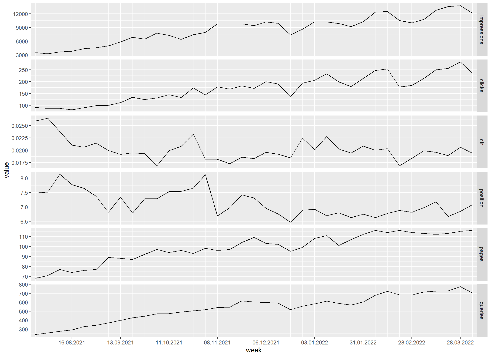
Agregace po kalendářních měsících
sc_aggregate_all_metrics("month") |>
filter(
month >= floor_date(as.Date("2021-08-01"), "month"),
month <= floor_date(as.Date("2022-03-01"), "month")
) |>
sc_reshape() |>
sc_plot("month")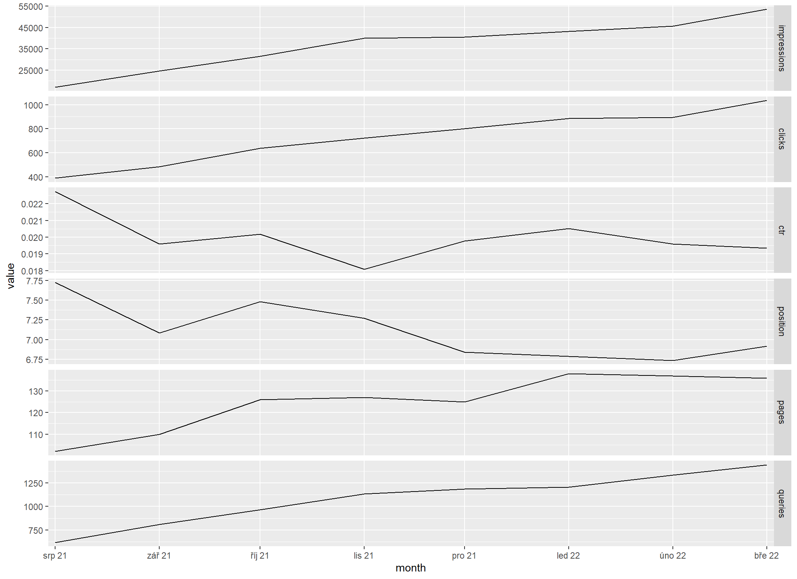
Průměr za kalendářní týdny
Průměr za kalendářní týdny je výpočetně mnohem jednodušší. Stačí spočítat průměry všech číselných hodnot. Jak ale píšu výše, pro CTR a pozice je metodicky nesprávný, a proto někdy méně a jindy více nepřesný, a u počtů stránek a dotazů sice metodicky dává smysl, nicméně říká něco jiného.
Když si porovnáte tvar křivek metrik pages a queies, jsou sice podobné, ale čísla jsou úplně jiná – v prvním výpočtu (počet za týden) jsem se dostal na 110 stránek a 800 dotazů, kdežto v druhém (průměr týdenního počtu) jen na 80 resp. 300.
sc_all_metrics_by_date |>
mutate(week = floor_date(date, "week")) |>
filter(week >= floor_date(as.Date("2021-08-01"), "week")) |>
group_by(week) |>
summarise(across(clicks:queries, mean)) |>
sc_reshape() |>
sc_plot("4 weeks", "%x", "week")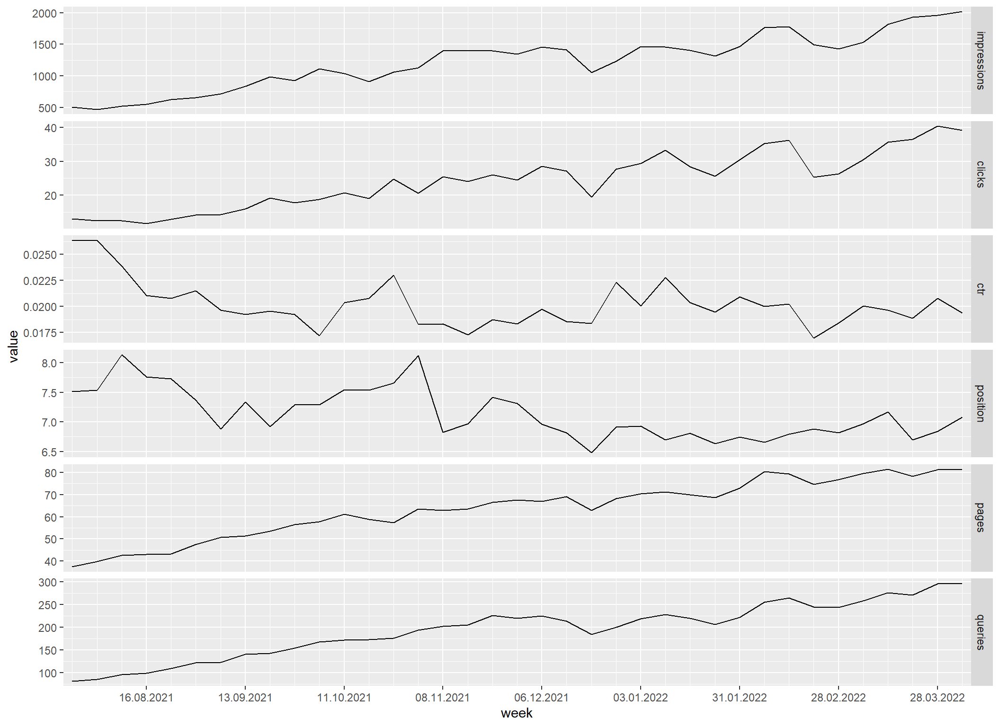
Rozsah hodnot za týden
Na tomto grafu vykreslím medián jako čáru, mezikvartilové rozpětí (interquartile range, tj. rozsah mezi 1. a 3. kvartilem) jako tmavší pás a variační rozpětí (rozdíl mezi maximem a minimem) jako světlejší pás.
sc_all_metrics_by_date |>
mutate(week = floor_date(date, "week"), .before = date) |>
filter(week >= floor_date(as.Date("2021-08-01"), "week")) |>
select(!date) |>
sc_reshape() |>
group_by(week, metric) |>
summarise(
median = median(value),
lower = quantile(value, probs = 0.25),
upper = quantile(value, probs = 0.75),
min = min(value),
max = max(value),
.groups = "drop"
) |>
ggplot(aes(x = week)) +
geom_ribbon(aes(ymin = min, ymax = max), fill = "gray80") +
geom_ribbon(aes(ymin = lower, ymax = upper), fill = "gray60") +
geom_line(aes(y = median), color = "gray25") +
scale_x_date(
date_breaks = "4 weeks", date_labels = "%x", date_minor_breaks = "week",
expand = expansion(0.025)
) +
facet_wrap(~metric, ncol = 1, scales = "free_y", strip.position = "right")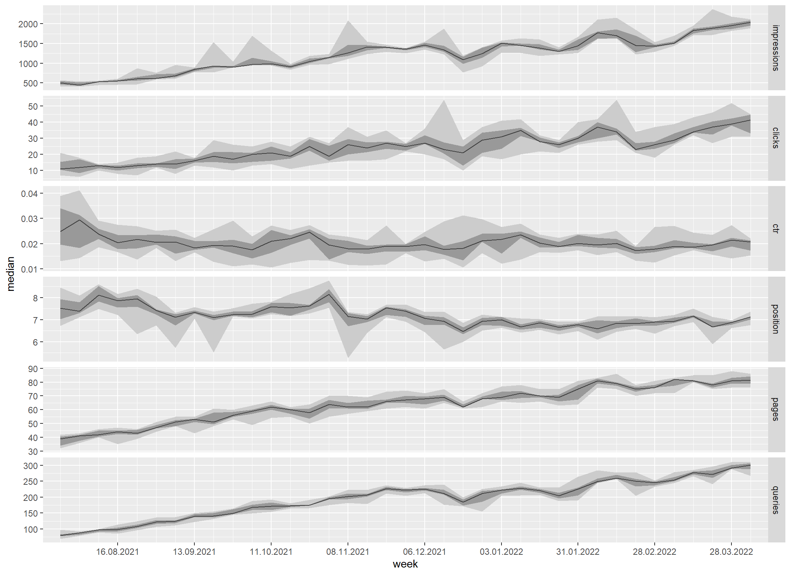
Klouzavý průměr (moving average)
Klouzavý průměr za posledních sedm dní zpopularizovaly různé covidové statistiky, ale pro data Search Console obvykle nemá smysl. Hodí se jen v případě, že potřebujete znát co nejnovější hodnotu (typicky včerejší) očištěnou od týdenní sezónnosti, přestože týden ještě neskončil.
Pro jistotu ukážu, jak jde klouzavý průměr za posledních 7 dní spočítat (zde jen imprese), přestože ho sám nepoužívám. Pod něj zároveň šedou barvou vykreslím skutečné imprese po dnech.
sc_by_date |>
mutate(
impressions_avg7 = slider::slide_dbl(impressions, ~ mean(.x), .before = 6)
) |>
ggplot(aes(x = date)) +
geom_line(aes(y = impressions), color = "gray") +
geom_line(aes(y = impressions_avg7)) +
scale_x_date(
date_breaks = "3 months", date_labels = "%b %y",
date_minor_breaks = "month", expand = expansion(0.01)
)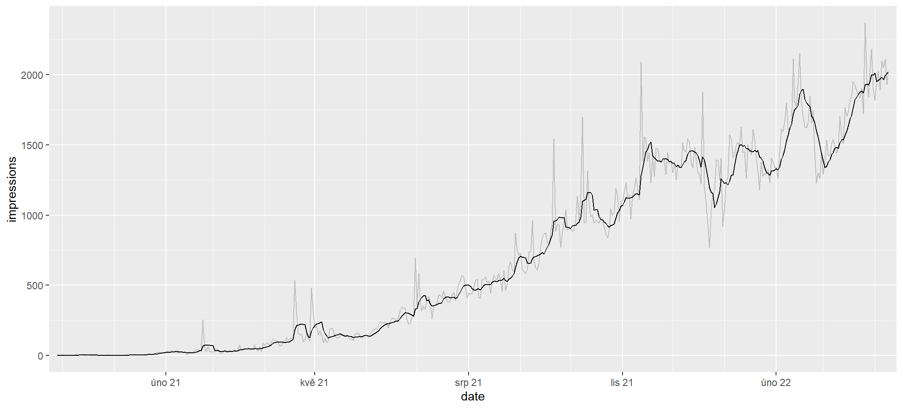
Regrese
V praxi je úplně nejjednodušší vyhledit denní křivku nějakou regresí. V balíčku ggplot2 je na to hotový geom_smooth.
sc_by_date |>
sc_reshape() |>
sc_plot() +
geom_smooth()`geom_smooth()` using method = 'loess' and formula = 'y ~ x'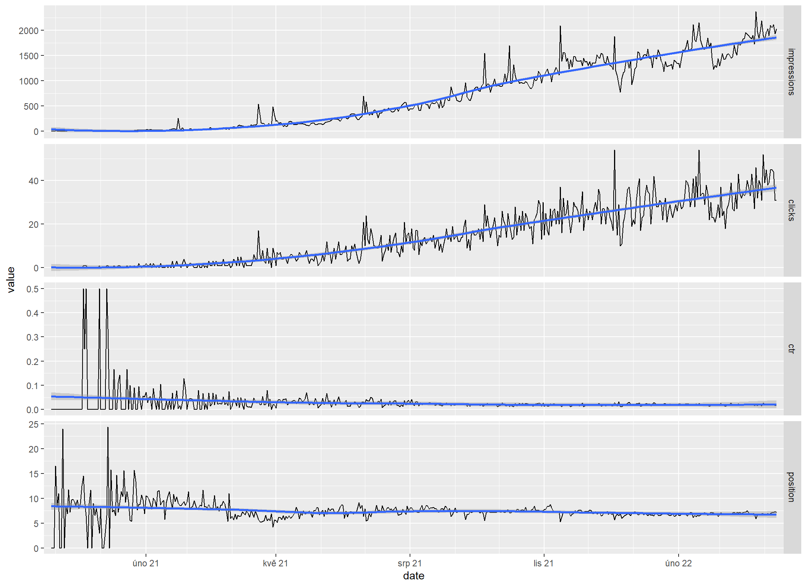
Pokud chci křivku klikatější, jde to nastavit parametrem span.
sc_by_date |>
sc_reshape() |>
sc_plot() +
geom_smooth(span = 0.1)`geom_smooth()` using method = 'loess' and formula = 'y ~ x'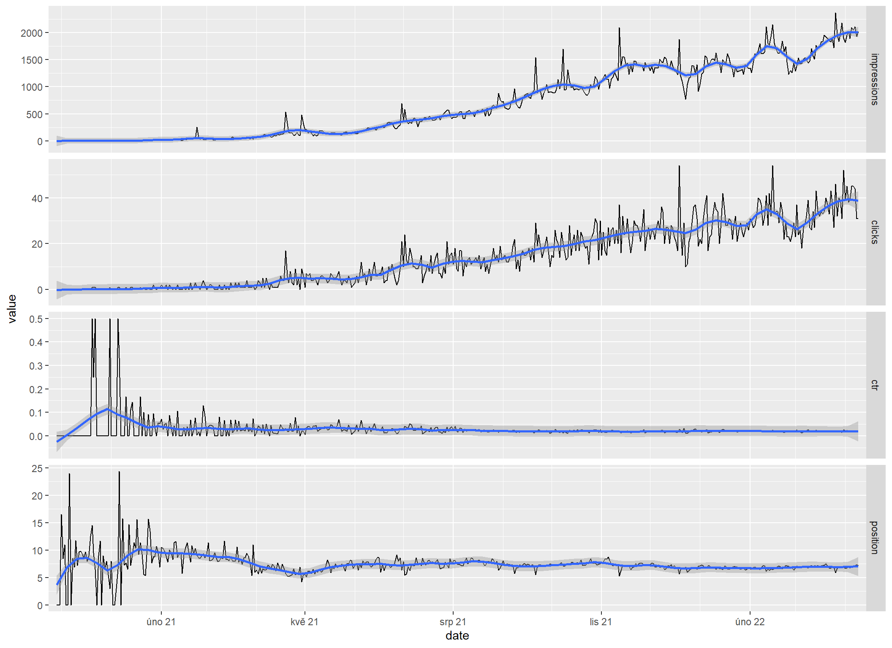
A ještě ukážu, jak jde geom_smooth vykreslit na jediné metrice za kratší období, protože to je typ grafu, který asi používám v různých reportech pro klienty nejčastěji. Šedý pás okolo modré křivky je konfidenční interval.
sc_by_date |>
filter(date >= as.Date("2022-01-01")) |>
ggplot(aes(x = date, y = impressions)) +
geom_line(color = "gray50") +
geom_smooth() +
scale_x_date(date_labels = "%b %y")`geom_smooth()` using method = 'loess' and formula = 'y ~ x'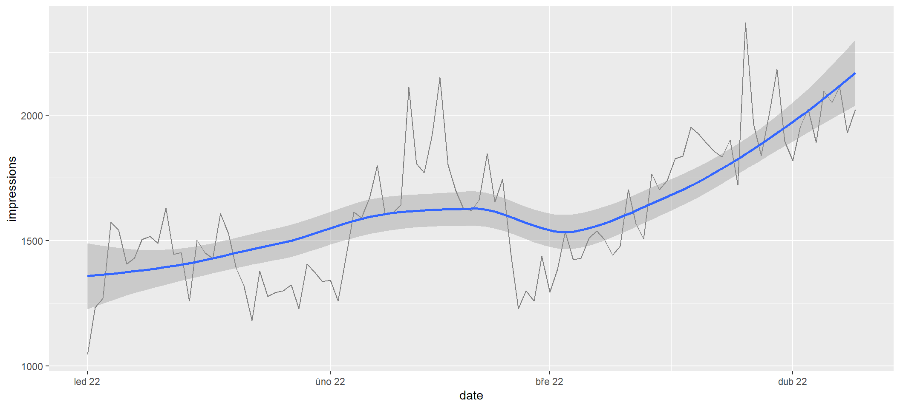
Poměrové metriky
Z předešlých grafů už vím, že imprese i kliky dlouhodobě rostou a že to je mj. dáno tím, že roste počet vstupních stránek a dotazů. Tahle informace mi ale nestačí. Existují totiž tři možné varianty:
- Imprese a kliky rostou víc, než by odpovídalo nárůstu počtu stránek a dotazů. To by se mi líbilo nejvíc, protože by to znamenalo, že novější stránky resp. dotazy jsou úspěšnější než starší, případně se na růstu impresí a kliků podílí ještě něco jiného, např. celková síla webu.
- Rúst impresí a kliků zhruba odpovídá růstu počtu stránek a dotazů. To je neutrální výsledek – odměna za vynaloženou práci na obsahu (a tedy efektivita této práce) zůstává pořád zhruba stejná, ani neklesá, ani se nezvyšuje.
- Poslední varianta je nejhorší: imprese a kliky rostou méně, než by odpovídalo nárůstu počtu stránek a dotazů. Efektivita vložené práce se tedy zhoršuje. Někdy to jinak nejde, protože nízko visíci ovoce je už otrhané, ale je dobré o tom vědět.
Na tyhle otázky pomáhají najít odpověď poměrové metriky. V principu jde o poměry počtu impresí a kliků na jedné straně a počtu stránek a dotazů na straně druhé. Navíc je zajímavý i poměr počtu dotazů na stránku.
sc_aggregate_all_metrics() |>
filter(week >= floor_date(as.Date("2021-08-01"), "week")) |>
transmute(
week = week,
impressions_per_page = impressions / pages,
clicks_per_page = clicks / pages,
impressions_per_query = impressions / queries,
clicks_per_query = clicks / queries,
queries_per_page = queries / pages
) |>
sc_reshape() |>
sc_plot("4 weeks", "%x", "week", strip_pos = "top")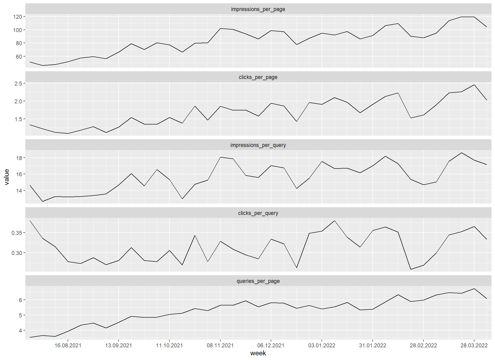
Z grafu je vidět, že počty impresí a kliků na stránku stále rostou, což je dobře – odpovídá to variantě 1. S impresemi a kliky na dotaz je to už slabší, ty posledních cca 5 měsíců stagnují. Co to znamená? Na to odpovídá poslední poměrová metrika, počet dotazů na stránku. Ta roste, což znamená, že novější stránky jsou efektivnější především proto, že pokrývají víc dotazů, avšak jednotlivé novéjší dotazy jsou efektivní zhruba stejně.
K tomu jen poznámka: Grafy samy o sobě nejsou důkazem tvrzení, která zde píšu. Jsou jen dobrým podkladem k odbornému odhadu, který je tím spolehlivější, čím lépe znám daný web a jeho historii.
Metriky podle pozic
Oblíbené vizualizace jsou různé metriky podle pozic nebo intervalů pozic. Např. Collabim a Marketing Miner nabízí graf počtu dotazů podle skupin pozic. I takové grafy jsou ze Search Console udělat.
Počet dotazů podle intervalů pozic
V Collabimu a Marketing Mineru je 100% plošný graf počtu dotazů podle intervalů pozic. Ten v principu vypadá takhle, byť má intervaly pozic nastavené jinak:
sc_by_date_query |>
filter(date >= as.Date("2021-08-01")) |>
mutate(
pos_int = cut(
position,
breaks = c(10 * 0:3, Inf),
labels = c("1-10", "11-20", "21-30", "31+")
)
) |>
group_by(date, pos_int) |>
summarise(queries = n_distinct(query)) |>
ungroup() |>
ggplot(aes(x = date, y = queries, fill = pos_int)) +
geom_area(position = "fill") +
scale_x_date(
date_breaks = "3 months", date_labels = "%b %y",
date_minor_breaks = "month", expand = expansion(0.01)
) +
scale_fill_brewer(type = "seq", direction = -1)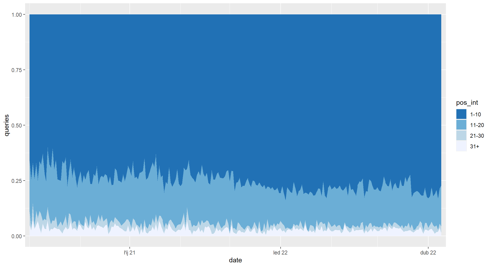
Tenhle graf má ale význam jen pro pevně danou sadu dotazů, která se v čase nemění. V kontextu Search Console, kde se dotazy a jejich počet každý den mění, nedává příliš smysl. O trochu užitečnější je graf skutečných počtů dotazů nepřepočítaných na procenta. Z toho je alespoň vidět, že počet dotazů roste a růst táhnou dotazy v první desítce.
sc_by_date_query |>
filter(date >= as.Date("2021-08-01")) |>
mutate(
pos_int = cut(
position,
breaks = c(10 * 0:3, Inf),
labels = c("1-10", "11-20", "21-30", "31+")
)
) |>
group_by(date, pos_int) |>
summarise(queries = n_distinct(query), .groups = "drop") |>
ggplot(aes(x = date, y = queries, fill = pos_int)) +
geom_area() +
scale_x_date(
date_breaks = "3 months", date_labels = "%b %y",
date_minor_breaks = "month", expand = expansion(0.01)
) +
scale_fill_brewer(type = "seq", direction = -1)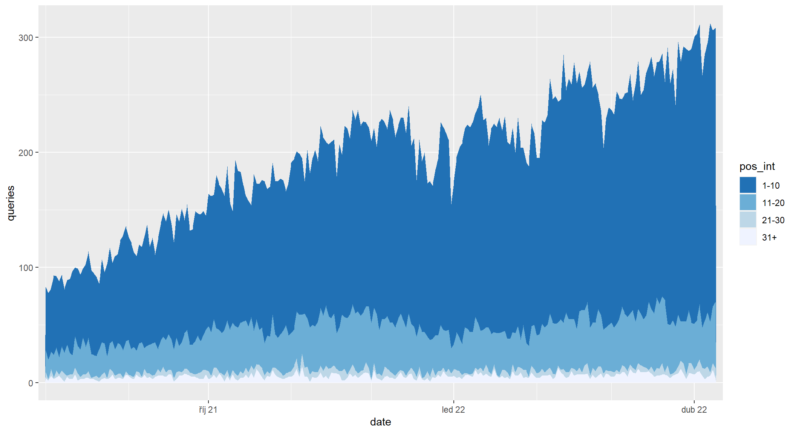
Počet vstupních stránek podle intervalů pozic
Obdobný graf lze vykreslit i pro počty vstupních stránek
sc_by_date_page |>
filter(date >= as.Date("2021-08-01")) |>
mutate(
pos_int = cut(
position,
breaks = c(10 * 0:3, Inf),
labels = c("1-10", "11-20", "21-30", "31+")
)
) |>
group_by(date, pos_int) |>
summarise(pages = n_distinct(page), .groups = "drop") |>
ggplot(aes(x = date, y = pages, fill = pos_int)) +
geom_area() +
scale_x_date(
date_breaks = "3 months", date_labels = "%b %y",
date_minor_breaks = "month", expand = expansion(0.01)
) +
scale_fill_brewer(type = "seq", direction = -1)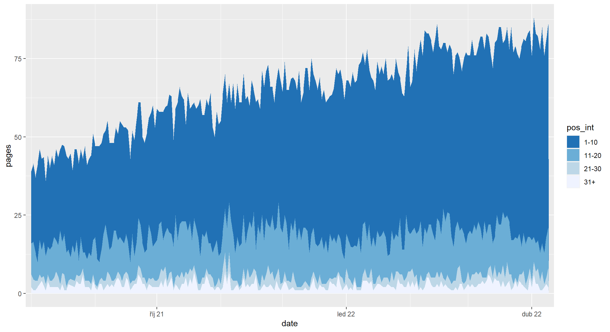
Imprese podle intervalů pozic
Graf jde vykreslit i pro imprese nebo kliky (zde imprese). Zároveň jsem mu nastavil i jiné intervaly pozic, aby bylo vidět pordobnější rozdělení pozic na první stránce výsledků hledání.
Ale upřímně, všechny tyhle grafy mají z dat Search Console málokdy smysl, protože bývají pro většinu webů hodně podobné a nějaký důležitý vhled z nich získám jen výjimečně.
sc_by_date_query |>
filter(date >= as.Date("2021-08-01")) |>
mutate(
pos_int = cut(
position,
breaks = c(1, 1.5, 3.5, 5.5, 10.01, Inf),
labels = c("1", "2-3", "4-5", "6-10", "10+"),
right = FALSE
)
) |>
group_by(date, pos_int) |>
summarise(impressions = sum(impressions), .groups = "drop") |>
ggplot(aes(x = date, y = impressions, fill = pos_int)) +
geom_area() +
scale_x_date(
date_breaks = "3 months", date_labels = "%b %y",
date_minor_breaks = "month", expand = expansion(0.01)
) +
scale_fill_brewer(type = "seq", direction = -1)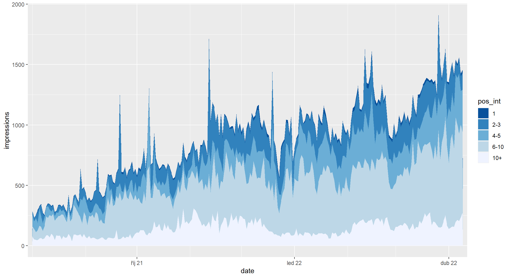
Porovnání metrik s předešlým obdobím nebo rokem
Dalším populárním grafem je porovnání běžného období s obdobím před rokem (YoY, year over year) nebo s obdobím bezprostředně předcházejícím.
Meziroční porovnání (YoY)
Princip přípravy je jednoduchý. Vím, že mám v dlouhé tabulce 6 metrik, takže ke každému řádku přidám funkcí lag hodnotu z řádku o 6 * 365 řádků zpátky. Tuhle hodnotu pak vykreslím tečkovanou čárou.
sc_all_metrics_by_date |>
sc_reshape() |>
mutate(value_prev = lag(value, 6 * 365)) |>
filter(date >= as.Date("2022-01-01")) |>
sc_plot("month") +
geom_line(aes(y = value_prev), linetype = "dotted")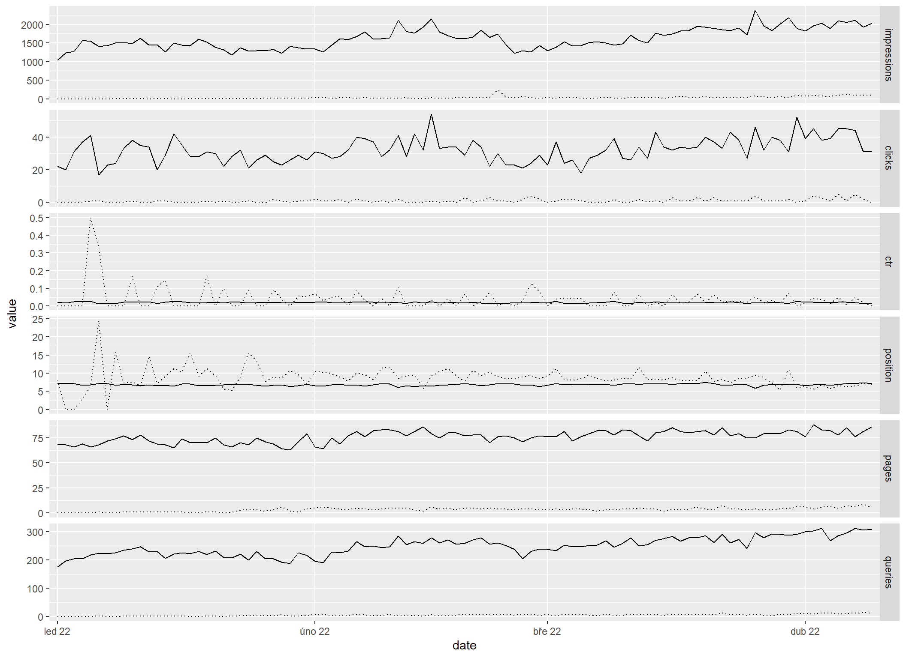
Posledních 12 týdnů a 12 týdnů před tím
Obdobně jde vykreslit jakékoli období s jakoukoli granularitou a k němu stejně dlouhé období bezprostředně předcházející.
sc_aggregate_all_metrics("week") |>
sc_reshape() |>
mutate(value_prev = lag(value, 6 * 12)) |>
filter(week >= floor_date(as.Date("2022-01-03"), "week")) |>
sc_plot("2 weeks", "%x", "week") +
geom_line(aes(y = value_prev), linetype = "dotted")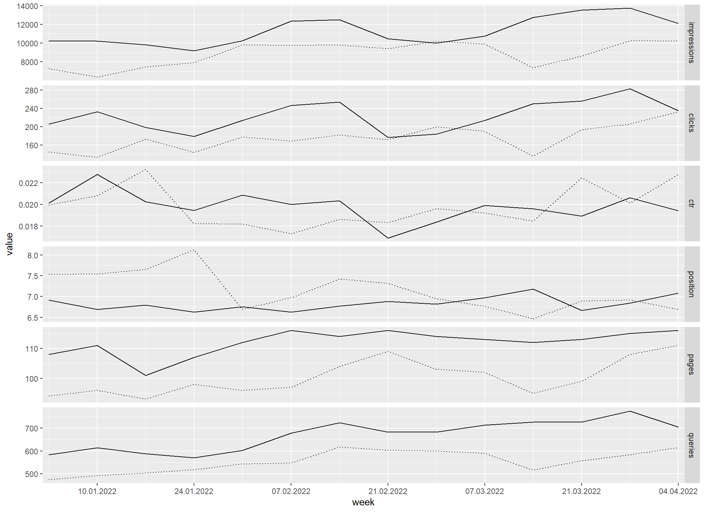
Autokorelace
Zajímavá varianta je, když se vykreslí jen rozdíly (případně podíly resp. procenta) mezi aktuální a předešlou hodnotou. V principu se jedná o svislou úsečku mezi plnou a tečkovanou z grafů výše, která má základ v nule.
Zde je příklad posledních 12 týdnů v porovnání s předešlými 12 týdny vykreslený po dnech. Ukazuje, o kolik byla daná metrika v daný den vyšší než před 12 týdny.
sc_all_metrics_by_date |>
sc_reshape() |>
mutate(value = value - lag(value, 6 * 7 * 12)) |>
filter(date >= as.Date("2022-01-01")) |>
ggplot(aes(x = date, y = value)) +
geom_segment(aes(xend = date, yend = 0)) +
scale_x_date(date_breaks = "month", date_labels = "%b %y") +
facet_wrap(~metric, ncol = 1, scales = "free_y", strip.position = "right")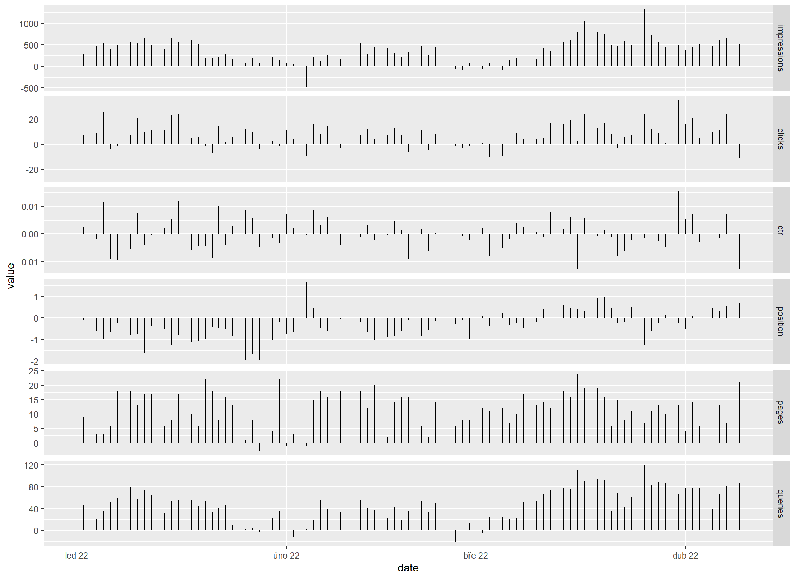
Dny v týdnu
Pro většinu webů je typická týdenní periodicita. Někde je slabší, někde silnější a liší se i její průběh. Asi nejlepším porovnáním je boxplot, který ukazuje jednak medián (tlustší vodorovná čára uvnitř boxu) a jednak i celou distribuci hodnt (box reprezentuje 50 % hodnot uprostřed, box i s fousy rozpětí bez odlehlých hodnot, které reprezentují puntíky).
Graf má smysl spíš jen pro imprese a kliky, protože u ostatních metrik se periodicita moc neprojevuje.
sc_by_date |>
filter(date >= as.Date("2021-08-01")) |>
select(!c(ctr, position)) |>
sc_reshape() |>
mutate(day = wday(date, label = TRUE, week_start = 1)) |>
ggplot(aes(x = day, y = value)) +
geom_boxplot() +
facet_wrap(~metric, ncol = 1, scales = "free_y", strip.position = "right")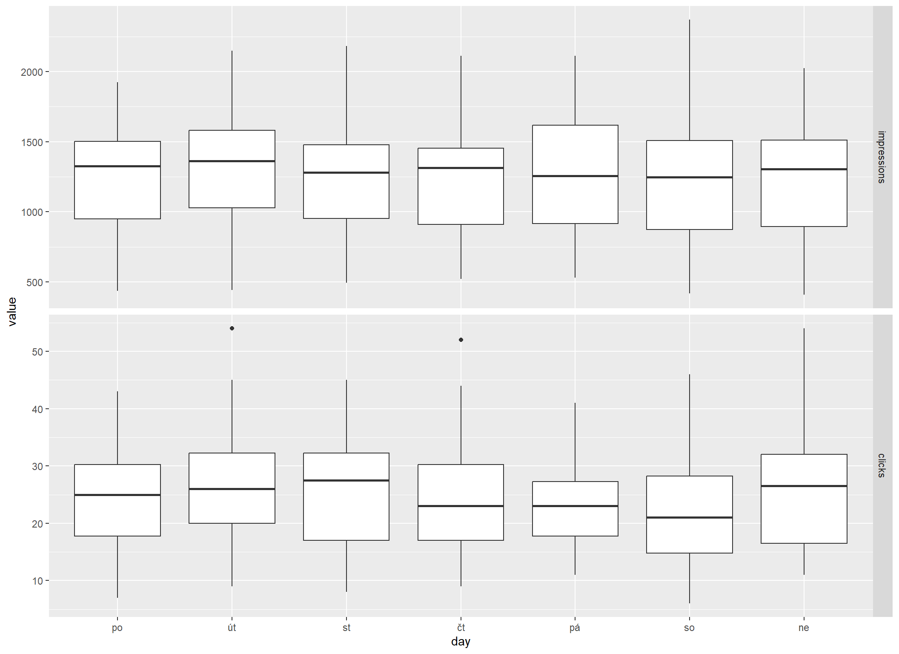
Z grafu je vidět, že zrovna tenhle web silnou týdenní periodicitu nemá. Sice od pondělí trochu vystoupá do úterý, pak až do soboty mírně klesá a znovu stoupne v neděli, ale rozdíly hodnot nejsou moc přesvědčivé.
Dekompozice časové řady
Pro dekompozici časových řad na trend, sezónnost a šum existuje mnoho teoretických modelů a balíčků, které je počítají. Pro příklad ukážu postup s balíčkem feasts z rodiny balíčku tsibble. Ten sice nějakou sezónnost našel, ale zároveň ukazuje, že se pohybuje jen v rozpětí cca 100 impresí (-50 až 50), což v objemu nějakých 2000 impresí za den není zrovna moc. Navíc je vidět, že rozpětí šumu (označený jako random) je čtyřikrát větší.
sc_by_date |>
filter(date >= as.Date("2022-01-01")) |>
as_tsibble(index = date) |>
fabletools::model(feasts::classical_decomposition(impressions)) |>
fabletools::components() |>
autoplot()Warning: Removed 3 rows containing missing values (`geom_line()`).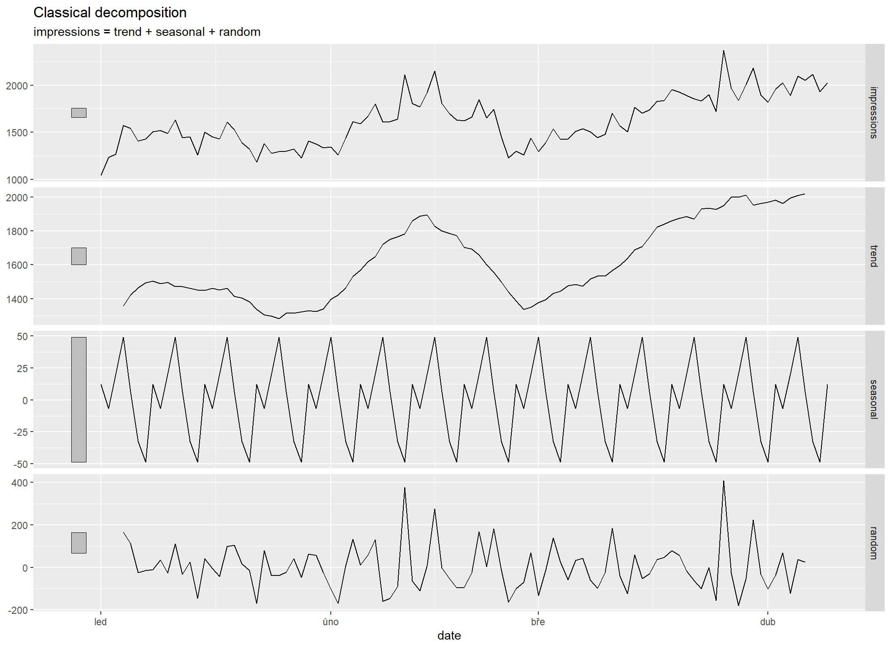
Nutno poznamenat, že sezónnost v v rámci roku nejde z dat Search Console odvodit, protože je k dispozici jen 16 měsíců dat. Museli byste si data sami archivovat za delší období.
Segmentace podle URL
Data Search Console se nejčastěji segmentují podle skupin vstupních stránek (URL) nebo podle skupin dotazů. Většinou segmentuju aktuální stav (tj. např. posledních 28 dní) sloupcovým grafem, ale vývoj v čase se občas hodí taky.
V tomto konkrétním případě se v URL hned za doménou nachází složka representující kategorii (rubriku či sekci webu), takže se nabízí segmentace stránek podle těchto kategorií. Dále jde segmentovat i podle typu stránky – na webu jsou jednak stránky rubrik se seznamem článků (ty mají za doménou jen jedno lomítko) a jednak články, které mají za doménou dvě lomítka.
Typ stránky: rubriky vs. články
Vyjdu z datasetu sc_by_date_page a doplním ho o sloupec reprezentující typ stránky. Imprese a kliky sečtu za měsíc a rubriku a přidám i počet unikátních stránek. Výsledek vykreslím jako vrstvený plošný graf (stacked area chart). Rubriku poznám tak, že má v URL celkem 3 lomítka, kdežto článek má 4. Tím se mi do rubrik dostane i homepage, ale to mi nevadí.
sc_by_date_page |>
filter(
between(date, as.Date("2021-01-01"), as.Date("2022-03-31")),
) |>
mutate(
page_type = if_else(str_count(page, "/") == 3, "rubrika", "článek"),
month = floor_date(date, "month")
) |>
group_by(month, page_type) |>
summarise(
n = n_distinct(page),
impressions = sum(impressions),
clicks = sum(clicks),
.groups = "drop"
) |>
pivot_longer(cols = n:last_col(), names_to = "metric") |>
ggplot(aes(x = month, y = value, fill = page_type)) +
geom_area() +
facet_wrap(~ metric, ncol = 1, scales = "free_y", strip.position = "right") +
scale_fill_brewer(type = "qual", palette = 1)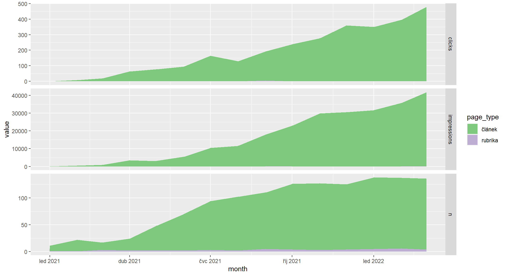
Výsledek je jednoznačný: rubrik je oproti článkům velmi málo a na viditelnosti nebo návštěvnosti z Googlu se reálně nepodílejí.
Rubriky
Rubriky identifikuje první složka za doménou, takže ji stačí z URL vykousnout funkcí str_extract z balíčku stringr, které pošlu jen cestu za doménou získanou funkcí path z balíčku urltools. Homepage vyřadím (má ve sloupci category hodnotu NA).
sc_by_date_page |>
mutate(
category = str_extract(path(page), "^[^/]+"),
month = floor_date(date, "month")
) |>
filter(
between(month, as.Date("2021-01-01"), as.Date("2022-03-31")),
!is.na(category)
) |>
group_by(month, category) |>
summarise(
n = n_distinct(page),
impressions = sum(impressions),
clicks = sum(clicks),
.groups = "drop"
) |>
pivot_longer(cols = n:last_col(), names_to = "metric") |>
ggplot(aes(x = month, y = value, fill = category)) +
geom_area() +
facet_wrap(~ metric, ncol = 1, scales = "free_y", strip.position = "right") +
scale_fill_brewer(type = "qual", palette = 8)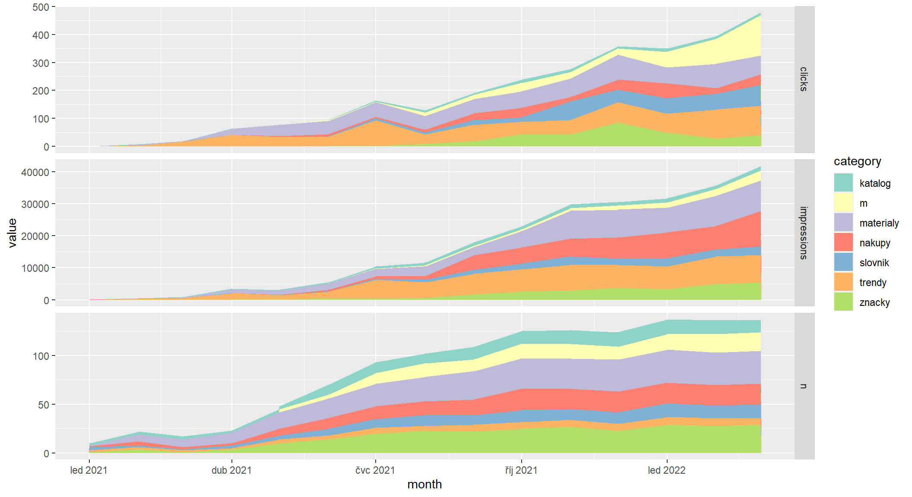
Tady už je interpretace zajímavější.
- Stránek v rubrice značky je hodně, ale impresí a kliků mají málo. Lze je tedy považovat za nepříliš úspěšné. Obdobně je na tom katalog.
- Opakem jsou trendy, které mají velmi málo stránek, ale získávají hodně impresí i kliků.
- Rubriky nákupy a materiály mají hodně impresí, ale z hlediska viditelnosti nákupy fungují efektivněji, protože impresí dosahují s menším počtem stránek. Zase ale mají horší CTR.
- Zajímavá je rubrika m (magazín), která má hodně kliků při menším počtu impresí (takže vysoké CTR) a navíc jí kliky v posledních měsících rychle rostou i při stagnujícím počtu stránek.
Aby byla efektivita výkonových metrik (kliky a imprese) vzhledem k počtu unikátních stránek vidět ještě lépe, lze použít poměrové metriky: počet impresí na stránku a počet kliků na stránku.
sc_by_date_page |>
mutate(
category = str_extract(path(page), "^[^/]+"),
month = floor_date(date, "month")
) |>
filter(
between(month, as.Date("2021-01-01"), as.Date("2022-03-31")),
!is.na(category)
) |>
group_by(month, category) |>
summarise(
impressions_pp = sum(impressions) / n_distinct(page),
clicks_pp = sum(clicks) / n_distinct(page),
.groups = "drop"
) |>
pivot_longer(cols = impressions_pp:last_col(), names_to = "metric") |>
ggplot(aes(x = month, y = value, fill = category)) +
geom_area() +
facet_wrap(~ metric, ncol = 1, scales = "free_y", strip.position = "right") +
scale_fill_brewer(type = "qual", palette = 8)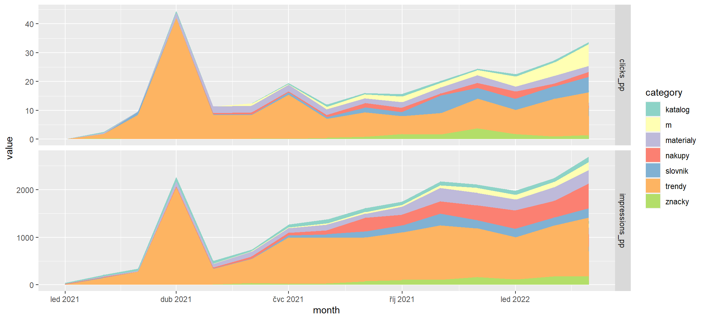
Zde je ještě lépe vidět malá efektivita značek a katalogu a vysoká efektivita trendů.
Z těchto poznatků jde odvodit docela dost doporučení pro další práci s obsahem, ale to již záleží na konkrétním kontextu projektu.
Podobně jde segmentovat podle dotazů. Nejčastěji se tak rozlišuje brandové hledání od obecného, ale jde zapojit i klasifikace dotazů z analýzy klíčových slov a segementovat podle ní. To už ale přesahuje téma tohoto článku.
A to je všechno :-)